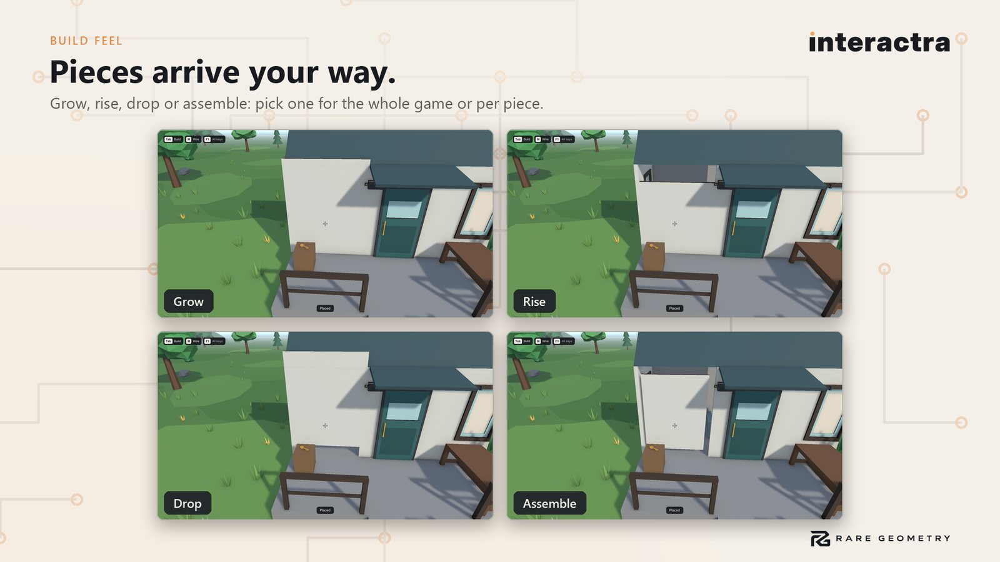
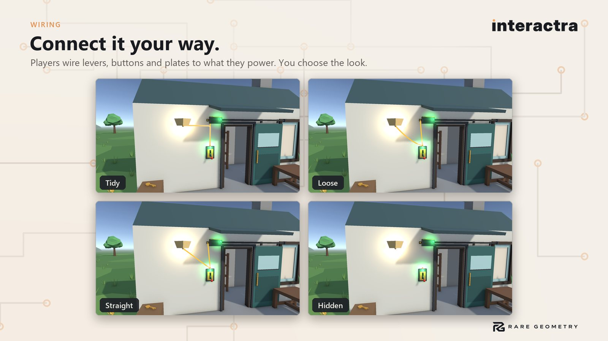

Build feel, wires and player options
How building, wiring and the hands-on objects look and feel, and what your players may change. Everything here is a setting; nothing needs code.
Build animations #


A placed piece can arrive in one of five ways. Set it for the whole game on the build theme (Effects > Build), or per piece on its Piece Look.
| Style | What the player sees |
|---|---|
| None | The piece is simply there. |
| Grow | It grows from its base. |
| Rise | It rises out of the ground. |
| Drop | It drops in from above and settles. |
| Assemble | Its parts fly in and lock together. |
Build Duration sets how long it takes. With the player option Reduce motion on, pieces appear at once.
Blueprints #
Set Blueprint Build Time on the Build World above 0 and placed pieces start as see-through blueprints. A player
finishes one by holding Build on it: the real piece fills in from the ground while the button is held. Blueprints
are saved, undone and loaded like any piece. To finish them your own way (delivered resources, crafting, a quest), set
PieceBlueprint.Progress from 0 to 1, or call Complete().
Debris when a piece is removed #
On the build theme, Effects > Remove can be Debris: the removed piece breaks into slabs along its own shape, in its own colours, which tumble and fade. The Industrial look uses it.
Wire looks #


Wire Visuals (on the wiring object in your scene, or the Workbench's Wiring tab) has a Style:
| Style | Look |
|---|---|
| Tidy | Along the wall: up, then across, with rounded corners. |
| Loose | Hanging between the two ends. |
| Straight | A straight line. |
| Only while wiring | Hidden until the player takes out the wire tool. |
| Hidden | Never drawn (the connection still works). |
Powered wires can spark; players can hide wires with the Show wires option if you allow it.
Thrown objects #
A carried object that can be thrown shows where it will land: a line along its path and a ring at the landing spot. On the Carry behaviour: Show Throw Arc, its colour, width and how many seconds of flight it shows.
Elevators with doors and call buttons #
Elevator Or Moving Platform has a Doors list. Each entry is a panel that slides by its Open Offset; stop -1 means a door on the cabin (it opens at every stop), 0, 1, ... a landing door at that stop. Doors open when the elevator arrives and close before it leaves; Door Time is how long they take.
Elevator Call Button has Lit While Waiting: an object (a glowing ring, a lit cap) shown from the press until the elevator arrives, like a real call button. Use one button per floor outside, and one per floor inside the cabin.
Breakables that break apart #
A Breakable with no broken version of its own shatters into pieces in its own colours (Shatter, and how many Pieces). Give it a Broken Prefab to use your own debris instead.
Player options #
A Player Options asset lists what your players may change and where each option starts: prompt size, press instead of hold, hold time, reduced motion, captions, use things by walking up, rumble, building screen size, key hints and wire visibility. Untick Players May Change to fix an option at your value; the options panel (F10 in the demo) lists only what players may change and marks what they changed.
Places for a map #
Add Map Place to anything a map should show (a house, a door, a key). With a Rare Geometry map product such as Bearing installed, the place appears on its compass and maps; alone, the component does nothing and costs nothing.